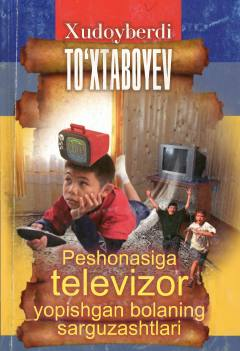

PTBolalar uchun yozilgan qiziqarli sarguzasht qissalar to‘plami.
Mazkur kitob mashhur o‘zbek yozuvchisi Xudoyberdi To‘xtaboyevning jajji bolajonlarga atalgan qiziqarli qissalaridan iborat. Asar qahramonlarining sarguzashtlari, ularning quvnoq va ibratli voqealari yosh kitobxonalarga manzur bo‘ladi.